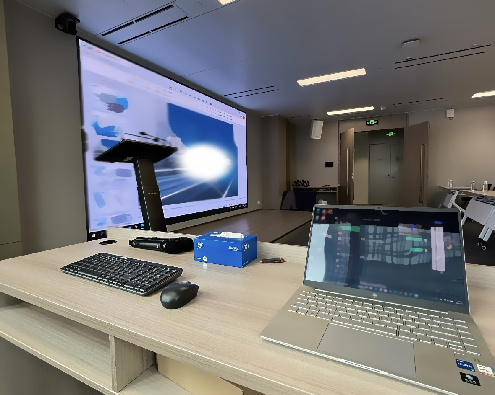

My Internship Experience
Company: Grant Thornton Zhitong Certified Public Accountants LLP
Department: Business Department Intern
- Assisted subsidiary audits: financial statements & balance reconciliation
- Handled revenue calculations and audit documentation
- Performed on site inventory validation checks
Guotai Haitong Securities Co., Ltd. Guangdong Branch
Department: Business Department Intern
- Assisted subsidiary audits: financial statements & balance reconciliation
- Handled revenue calculations and audit documentation
- Performed on site inventory validation checks
